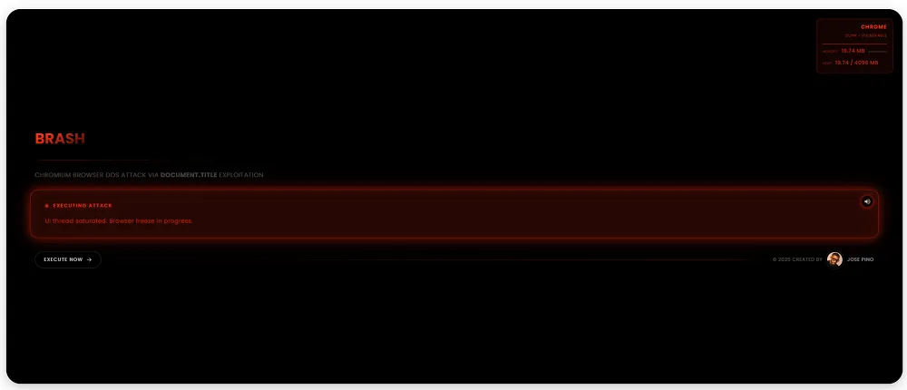

Brash: una vulnerabilidad que puede romper los navegadores Chromium en segundos
Desde PCHardware, siempre insistimos en la necesidad de instalar todas y cada una de las actualizaciones, no solo de Windows, sino también del software que gestiona los periféricos además del correspondiente firmware. De esta forma, nuestro equipo siempre estará seguro ante cualquier vulnerabilidad que se haya detectado a este momento.
No podemos olvidarnos de actualizar el software que utilicemos a menudo, especialmente el navegador, ya que es la principal puerta de entrada de software malicioso en cualquier equipo. La última vulnerabilidad detectada, bautizada como Brash, únicamente afecta a los navegadores web, concretamente a los que utilizan el motor de renderizado Blink, el utilizado por todos los navegadores basados en Chromium, el utilizado por Chrome, Edge, Opera, Brave y demás, es decir, por la mayoría de los navegadores web disponibles.
Cuando se detecta una vulnerabilidad, los investigadores se ponen en contacto con el desarrollador del software en cuestión y le dan un plazo para solucionarlo antes de hacerlo público. El experto en ciberseguridad José Pinto, quien descubrió esta vulnerabilidad, se puso en contacto con Google (desarrollador de Chromium) al no obtener respuesta por su parte ni solucionar este problema, ha decidido dar a conocerlo para que los usuarios sepan detectarlo a tiempo y así evitar problemas mayores.
Qué es Brash
Si tenemos en cuenta que Brash únicamente afecta a los navegadores web con el motor de renderizado Blink, el utilizado por Chromium y que es la base de prácticamente todos los navegadores web, excepto Firefox y Safari, por lo que hablamos de una vulnerabilidad que puede afectar miles de millones de personas en todo el mundo. Este afecta a como los navegadores basados en Chromium gestionan las actualizaciones de las pestañas de las páginas web que tenemos abiertas. Como no existe un límite de frecuencia para estas actualizaciones, cualquier amigo de lo ajeno puede aprovechar esta vulnerabilidad para enviar millones de solicitudes por segundo, lo que conlleva un considerable incremento no solo del consumo de memoria RAM, sino también del uso del procesador, llegando a colapsarlo.

En determinados sistemas operativos, estos también se pueden ver afectados hasta llegar al punto de dejar de funcionar y obligar al usuario a reiniciar el equipo. Hablamos de sistemas operativos, y no de Windows en exclusiva, porque se trata de un problema del motor de renderizado, el mismo que se utiliza para las versiones de Windows, macOS, Android, iOS o cualquier otro sistema operativo.
Cómo evitarlo
A diferencia de otras vulnerabilidades, para sufrir esta vulnerabilidad no es necesario descargar ningún archivo de Internet. Tan solo nos podemos ver afectados si visitamos una web maliciosa que incluye un código JavaScript con las instrucciones para reducir el tiempo de actualización de las pestañas.
La solución a este problema pasaría por desactivar JavaScript, sin embargo, no es una solución factible ya que la mayoría de los sitios web lo utilizan para funcionar correctamente. En un principio, si no visitamos páginas web raras, no deberíamos tener ningún problema.